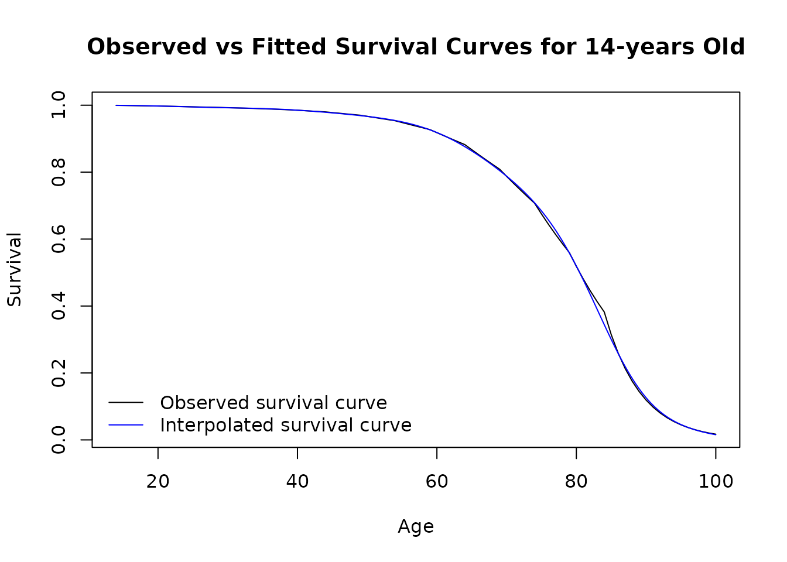

Implementing Cure Threshold
Source:vignettes/Implementing_cure_threshold.Rmd
Implementing_cure_threshold.RmdIntroduction:
The Neuroblastoma Partitioned Survival Model (PSM) employs a cure threshold. The cure threshold is the time in years at which the model survival assumptions change, and is set to 10 years in the base-case analysis. Beyond the cure threshold, the EFS curve only represents death events, as it was assumed that patients who were Event-Free at this point were cured. The mortality hazard rates for Event-Free and Relapsed patients are set to 5.6 and 10.64 times the mortality hazard rates for the general population, respectively.
This vignette describes how the PSM:
- adjusts general population hazard rates, and
- employs the cure threshold assumption.
Ajusting general population hazard rates:
General population hazard rates can be found in Life Tables. The life
table of Jordan is shipped with the NeuroblastomaPSM
package, and is used by default in the PSM model. The following steps
describe how the NeuroblastomaPSM package adjusts the
baseline mortality.
Generating the general population survival curve:
The survival curve represents the probability of surviving up to the
corresponding age or time point. The
get_lifeTable_survival_curve function calculates the
survival curve from a given vector of mortality probabilities (the
values recorded in any life table).
The survival curve () is calculated as the cumulative product of mortality probability for each time period.
where is the mortality probability at time .
# Define a vector of mortality probabilities
df_life_table <- NeuroblastomaPSM::df_lifeTable_Jordan
# Calculate the survival curve
survival_curve <- NeuroblastomaPSM::get_lifeTable_survival_curve(
mortality_probs = df_life_table$`Both sexes`
)
# Compare mortality probabilities to cumulative survival
rbind(
head(cbind(
survival_curve,
df_life_table$`Both sexes`
)),
tail(cbind(
survival_curve,
df_life_table$`Both sexes`
))
)
#> survival_curve
#> 0.98586000 0.014140
#> 0.98533256 0.000535
#> 0.98480541 0.000535
#> 0.98427854 0.000535
#> 0.98375195 0.000535
#> 0.98340370 0.000354
#> [96,] 0.04416341 0.176710
#> [97,] 0.03635929 0.176710
#> [98,] 0.02993424 0.176710
#> [99,] 0.02464456 0.176710
#> [100,] 0.02028962 0.176710
#> [101,] 0.01670424 0.176710
# Plot the survival curve obtained from the mortality probabilities
plot(
x = df_life_table$`Age Group`,
y = survival_curve,
type = 'l',
xlab = "Age",
ylab = "Survival",
main = "Survival Curve from the Jordanian Life Table"
)Adjust the mortatlity hazards:
The package provides the interpolate_survival_curve
function which interpolate the hazard rates between the ages and apply
user-defined multiplier. This function performs the following steps:
-
Estimate Cumulative Hazards:
- The cumulative hazard at each age is estimated from the survival probabilities using the formula:
-
Fit Interpolation Model:
- A model is fitted to the log cumulative hazards as a function of age
using either spline interpolation (
"spline") or a generalized additive model ("gam"). The choice of model is controlled by theinterpolation_modelparameter.
- A model is fitted to the log cumulative hazards as a function of age
using either spline interpolation (
-
Predict Cumulative Hazard Rates:
- Using the fitted model, the log cumulative hazards are predicted for
the
target_ages. - The predicted log cumulative hazards are then exponentiated to obtain the cumulative hazard rates:
- Using the fitted model, the log cumulative hazards are predicted for
the
-
Adjust Hazard Rates:
- The predicted cumulative hazard rates are adjusted by the
smr_multiplier.
- The predicted cumulative hazard rates are adjusted by the
-
Convert to Survival Curve:
- The adjusted cumulative hazard rates are converted back to survival probabilities using:
# Define age range and survival probabilities
curve_starting_age <- NeuroblastomaPSM::l_psm_parameters$age + NeuroblastomaPSM::l_psm_parameters$cure_threshold
v_life_table_ages <- df_life_table$`Age Group`
v_life_table_porbs <- df_life_table$`Both sexes`
v_life_table_porbs <- v_life_table_porbs[v_life_table_ages >= curve_starting_age]
v_life_table_ages <- v_life_table_ages[v_life_table_ages >= curve_starting_age]
# Calculate the survival curve for the modeled cohort
survival_curve <- NeuroblastomaPSM::get_lifeTable_survival_curve(
mortality_probs = v_life_table_porbs
)
# Plot the background survival curve for modeled cohort
plot(
x = v_life_table_ages,
y = survival_curve,
type = 'l',
xlab = "Age",
ylab = "Survival",
main = "Survival Curve for 14-years Old"
)
# Define output ages
target_ages <- seq(curve_starting_age, max(v_life_table_ages), 7/365)
# Interpolate Survival Curve
set.seed(1)
v_interpolated_curve <- NeuroblastomaPSM::interpolate_survival_curve(
survival_curve_ages = v_life_table_ages,
survival_curve = survival_curve,
target_ages = target_ages
)
# Compare fitted and observed survival curves
plot(
x = v_life_table_ages,
y = survival_curve,
xlab = "Age",
ylab = "Survival",
type = 'l',
main = "Observed vs Fitted Survival Curves for 14-years Old"
)
lines(x = target_ages, y = v_interpolated_curve, col = "blue")
legend(
"bottomleft",
legend = c("Observed survival curve", "Interpolated survival curve"),
col = c("black", "blue"),
lty = 1,
bty = "n"
)
# Interpolate Survival Curve with a SMR = 5.6
set.seed(1)
v_interpolated_EFS_curve <- NeuroblastomaPSM::interpolate_survival_curve(
survival_curve_ages = v_life_table_ages,
survival_curve = survival_curve,
target_ages = target_ages,
smr_multiplier = NeuroblastomaPSM::l_psm_parameters$smr_EFS
)
# Compare fitted and observed survival curves
plot(
x = v_life_table_ages,
y = survival_curve,
xlab = "Age",
ylab = "Survival",
type = 'l',
main = "Observed, Fitted and EFS Survival Curves for 14-years Old"
)
lines(x = target_ages, y = v_interpolated_curve, col = "blue")
lines(x = target_ages, y = v_interpolated_EFS_curve, col = "orange")
legend(
"bottomleft",
legend = c("Observed survival curve", "Interpolated survival curve", "EFS curve"),
col = c("black", "blue", "orange"),
lty = 1,
bty = "n"
)
# Interpolate Survival Curve with a SMR = 5.6 * 1.9
set.seed(1)
v_interpolated_PPS_curve <- NeuroblastomaPSM::interpolate_survival_curve(
survival_curve_ages = v_life_table_ages,
survival_curve = survival_curve,
target_ages = target_ages,
smr_multiplier = NeuroblastomaPSM::l_psm_parameters$smr_PPS
)
# Compare fitted and observed survival curves
plot(
x = v_life_table_ages,
y = survival_curve,
xlab = "Age",
ylab = "Survival",
type = 'l',
main = "Observed, Fitted, EFS and PPS Survival Curves for 14-years Old"
)
lines(x = target_ages, y = v_interpolated_curve, col = "blue")
lines(x = target_ages, y = v_interpolated_EFS_curve, col = "orange")
lines(x = target_ages, y = v_interpolated_PPS_curve, col = "red")
legend(
"bottomleft",
legend = c("Observed survival curve", "Interpolated survival curve", "EFS curve", "PPS curve"),
col = c("black", "blue", "orange", "red"),
lty = 1,
bty = "n"
)Employ the ‘cure threshold’:
The ‘cure threshold’ assumptions in this PSM are implemented in the
calculate_markov_trace function. Hence, part of the this
function code is shown below to demonstrate how the ‘cure threshold’
assumptions are applied.
# Define age range and survival probabilities
model_starting_age <- NeuroblastomaPSM::l_psm_parameters$age
curve_starting_age <- NeuroblastomaPSM::l_psm_parameters$age + NeuroblastomaPSM::l_psm_parameters$cure_threshold
v_life_table_ages <- df_life_table$`Age Group`
v_life_table_porbs <- df_life_table$`Both sexes`
v_life_table_porbs <- v_life_table_porbs[v_life_table_ages >= curve_starting_age]
v_life_table_ages <- v_life_table_ages[v_life_table_ages >= curve_starting_age]
# Load the fitted Gompertz model and other parameters
models_fit <- NeuroblastomaPSM::parametric_models
# Define model parameters
l_params <- c(
time_horizon = 15,
cycle_length = 1/12,
disc_rate_costs = 0.035,
disc_rate_qalys = 0.015,
NeuroblastomaPSM::l_psm_parameters
)
# Predict cumulative survival from the fitted parametric survival curves
df_survival_curves_long <- NeuroblastomaPSM::predict_cumulative_survival(
models_fit = models_fit,
l_params = l_params
)
# Flip survival dataframe to wide format:
df_survival_curves <- stats::reshape(
data = df_survival_curves_long,
timevar = "end_point",
idvar = c("time", "treatment"),
direction = "wide"
)
# Renaming the columns since reshape() adds a prefix to the column name:
names(df_survival_curves) <- gsub(
pattern = "survival\\.",
replacement = "",
x = names(df_survival_curves)
)
# Calculating 'PPS' and 'D' state occupancy, no "cure threshold" assumptions:
df_survival_curves$PPS <- df_survival_curves$OS - df_survival_curves$EFS
df_survival_curves$D <- 1 - df_survival_curves$OS
df_survival_curves2 <- df_survival_curves
# Calculating 'PPS' and 'D' state occupancy, "cure threshold" assumptions:
if(l_params$time_horizon > l_params$cure_threshold) {
# Get parameters
model_starting_age <- l_params$age
curve_starting_age <- model_starting_age + l_params$cure_threshold
curve_end_age <- model_starting_age + l_params$time_horizon
cycle_length <- l_params$cycle_length
cure_threshold <- l_params$cure_threshold
cure_starting_cycle <- (cure_threshold / cycle_length) + 1
v_curve_interpolation_ages <- seq(
curve_starting_age + cycle_length,
curve_end_age,
cycle_length
)
# Prepare life table parameters
v_life_table_ages <- df_life_table$`Age Group`
v_life_table_porbs <- df_life_table$`Both sexes`
v_life_table_porbs <- v_life_table_porbs[
v_life_table_ages >= curve_starting_age
]
v_life_table_ages <- v_life_table_ages[
v_life_table_ages >= curve_starting_age
]
# Calculate the survival curve for a healthy general population same age cohort
v_lifeTable_survival_curve <- NeuroblastomaPSM::get_lifeTable_survival_curve(
mortality_probs = v_life_table_porbs
)
# Estimate all-cause mortality for the EFS
v_cure_EFS_curve <- NeuroblastomaPSM::interpolate_survival_curve(
survival_curve_ages = v_life_table_ages,
survival_curve = v_lifeTable_survival_curve,
target_ages = v_curve_interpolation_ages,
smr_multiplier = l_params$smr_EFS
)
# Estimate all-cause mortality for the PPS
v_cure_PPS_curve <- NeuroblastomaPSM::interpolate_survival_curve(
survival_curve_ages = v_life_table_ages,
survival_curve = v_lifeTable_survival_curve,
target_ages = v_curve_interpolation_ages,
smr_multiplier = l_params$smr_PPS
)
# Apply the cure threshold assumptions
df_GD2 <- df_survival_curves[df_survival_curves$treatment == "GD2", ]
df_GD2$EFS[cure_starting_cycle:nrow(df_GD2)] <- cumprod(
c(df_GD2$EFS[cure_starting_cycle], v_cure_EFS_curve)
)
df_GD2$PPS[cure_starting_cycle:nrow(df_GD2)] <- cumprod(
c(df_GD2$PPS[cure_starting_cycle], v_cure_PPS_curve)
)
df_GD2$D <- 1 - (df_GD2$EFS + df_GD2$PPS)
df_TT <- df_survival_curves[df_survival_curves$treatment == "TT", ]
df_TT$EFS[cure_starting_cycle:nrow(df_TT)] <- cumprod(
c(df_TT$EFS[cure_starting_cycle], v_cure_EFS_curve)
)
df_TT$PPS[cure_starting_cycle:nrow(df_TT)] <- cumprod(
c(df_TT$PPS[cure_starting_cycle], v_cure_PPS_curve)
)
df_TT$D <- 1 - (df_TT$EFS + df_TT$PPS)
df_survival_curves <- rbind(df_GD2, df_TT)
}
# Extract relevant columns:
df_markov_trace <- df_survival_curves[
,
c("time", "treatment", "EFS", "PPS", "D")
]
df_markov_trace2 <- df_survival_curves2[
,
c("time", "treatment", "EFS", "PPS", "D")
]
# Sanity check:
stopifnot(
"Markov trace does not sum up to 1." =
all(abs(rowSums(df_markov_trace[, c("EFS", "PPS", "D")]) - 1) < 1e-12)
)The plots below show the difference between employing and not making the ‘cure threshold’ assumptions.
# Plot state occupancy - Cure Threshold
## TT
plot(
x = df_markov_trace$time[df_survival_curves$treatment == "TT"],
y = df_markov_trace$EFS[df_survival_curves$treatment == "TT"],
ylim = c(0, 1),
col = "darkgreen",
xlab = "Age",
ylab = "Survival",
type = 'l',
main = "TT State Occupancy - Cure Threshold"
)
lines(
x = df_markov_trace$time[df_survival_curves$treatment == "TT"],
y = df_markov_trace$PPS[df_survival_curves$treatment == "TT"],
col = "orange"
)
lines(
x = df_markov_trace$time[df_survival_curves$treatment == "TT"],
y = df_markov_trace$D[df_survival_curves$treatment == "TT"],
col = "red"
)
legend(
"topright",
legend = c("EFS", "PPS", "Dead"),
col = c("darkgreen", "orange", "red"),
lty = 1,
bty = "n"
)
## GD2
plot(
x = df_markov_trace$time[df_survival_curves$treatment == "GD2"],
y = df_markov_trace$EFS[df_survival_curves$treatment == "GD2"],
ylim = c(0, 1),
col = "darkgreen",
xlab = "Age",
ylab = "Survival",
type = 'l',
main = "GD2 State Occupancy - Cure Threshold"
)
lines(
x = df_markov_trace$time[df_survival_curves$treatment == "GD2"],
y = df_markov_trace$PPS[df_survival_curves$treatment == "GD2"],
col = "orange"
)
lines(
x = df_markov_trace$time[df_survival_curves$treatment == "GD2"],
y = df_markov_trace$D[df_survival_curves$treatment == "GD2"],
col = "red"
)
legend(
"topright",
legend = c("EFS", "PPS", "Dead"),
col = c("darkgreen", "orange", "red"),
lty = 1,
bty = "n"
)
# Plot state occupancy - No Cure Threshold
## TT
plot(
x = df_markov_trace2$time[df_survival_curves$treatment == "TT"],
y = df_markov_trace2$EFS[df_survival_curves$treatment == "TT"],
ylim = c(0, 1),
col = "darkgreen",
xlab = "Age",
ylab = "Survival",
type = 'l',
main = "TT State Occupancy - No Cure Threshold"
)
lines(
x = df_markov_trace2$time[df_survival_curves$treatment == "TT"],
y = df_markov_trace2$PPS[df_survival_curves$treatment == "TT"],
col = "orange"
)
lines(
x = df_markov_trace2$time[df_survival_curves$treatment == "TT"],
y = df_markov_trace2$D[df_survival_curves$treatment == "TT"],
col = "red"
)
legend(
"topright",
legend = c("EFS", "PPS", "Dead"),
col = c("darkgreen", "orange", "red"),
lty = 1,
bty = "n"
)
## GD2
plot(
x = df_markov_trace2$time[df_survival_curves$treatment == "GD2"],
y = df_markov_trace2$EFS[df_survival_curves$treatment == "GD2"],
ylim = c(0, 1),
col = "darkgreen",
xlab = "Age",
ylab = "Survival",
type = 'l',
main = "GD2 State Occupancy - No Cure Threshold"
)
lines(
x = df_markov_trace2$time[df_survival_curves$treatment == "GD2"],
y = df_markov_trace2$PPS[df_survival_curves$treatment == "GD2"],
col = "orange"
)
lines(
x = df_markov_trace2$time[df_survival_curves$treatment == "GD2"],
y = df_markov_trace2$D[df_survival_curves$treatment == "GD2"],
col = "red"
)
legend(
"topright",
legend = c("EFS", "PPS", "Dead"),
col = c("darkgreen", "orange", "red"),
lty = 1,
bty = "n"
)